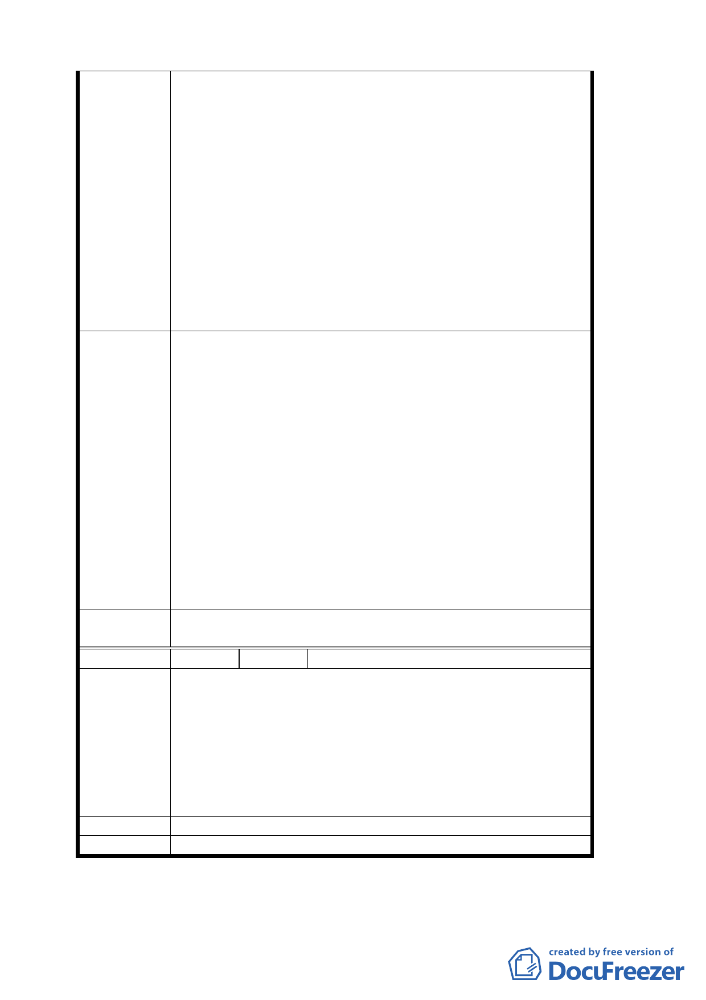

建議辦法
委員會決議
編號
陳情理由
建議辦法
委員會決議
疏，加上寧謐的萃湖，使公園顯得更加清幽。過去萃湖與蔣公行
館之間曾經暢行無阻，萃湖湖畔的一口老井，更是張氏族人取水
之地，過去因威權時代的關係而以圍牆阻隔，適逢中興山莊變更
計畫公展之際，應該拆去圍牆，恢復舊觀，與木柵公園同時畫入
公園用地，開放給居民。
貳、永建國小
永建國小的創設，源自於紀念考試院院長鈕永建先生於民國
41 年創立考試院附設中興小學而命名，創校至今有 50 餘年的歷
史。近年來隨著文山區人口的增加，校地已不敷使用，而有遷校
的想法。經過學校多年的爭取，目前國民黨同意中興山莊北側土
地捐給市政府做為永建國小校地。而至於遷校後的永建國小校地
如何使用，受到居民相當的關注。由於永建國小的成立和附近聚
落的發展有著相當的源緣，因此其後續利用，關係著該地區的發
展。
壹、中興山莊草籚
1.將華興一小段建地 440 號東南側一隅，和華興一小段雜地 315
號，面積約 340 坪(含蔣公行館)，與木柵公園連接，一併畫為公
園用地。
2.拆除行館與木柵公園的圍牆，與公園連成一氣。
3.保留蔣公行館，做為國發院的歷史陳列館、或木柵文史館、或與
木柵公園連結為自然中心。
貳、永建國小遷校後校地的後續利用
1. 建議將永建國小遷校後的校地作為成人自主學習園區。
2. 台北市文山社區大學是台灣最早成立、歷史最悠久的一所社區
大學，但是一直未能擁有自己的校區，必須遷就現況使用國中
生的課桌椅和設備，非長久之計，因此，若能規畫一成人自主
學習園區，使教學設備能符合成人學習的需求，使成人的學習
能夠推有好的學習環境，不枉辜負台北市政府苦心推動成人的
終身學習美意。
有關案內歷史性建築物之保存與利用與變更後永建國小之校地利
用，依市府補充資料及簡報資料等修正內容通過。
9 陳情人 高堯燦 等 3 人
陳情位置：中興山莊北側華興一小段 146 地號
陳情理由：
1. 民國 58 年都市計畫通盤檢討訂為機關用地，民國 75 年通檢變
更為行政區，民國 89 年通檢要把中興山莊北側變更為醫療用
地，硬要犧牲我們 146 的土地為保護區，後經爭取才作罷，今
又將我們土地變更為保護區，實罔顧百姓財產和權益。
2. 146 地號左右兩側坡度一樣，一邊訂為文教區，一邊早已是大樓
林立，146 地號卻被劃為保護區。
請徵收為學校用地，作為鄉土教學園地。
同編號 3。
討論事項 四
28